single-run 单次测量，无误差线、不得宣称置信区间。按 .66 上 scripts/plot_cross_host.py 与 plot_zipf_predicate.py 的规范绘制：matplotlib Agg、一张 PNG 一个 axes、marker="o" ms=4.5 lw=1.8、点线网格、隐藏上/右边框、对数纵轴 10^k 刻度、dpi 170 白底，配色沿用项目的协议/策略/桶宽色表。本地 py -3.10 的 matplotlib 3.10.9 生成，数据来自只读拉取的 CSV。
与旧扫描脚本的差异：那些脚本的 x 轴是 Zipf θ 五档（0/0.4/0.5/0.7/0.9），本轮正式矩阵没有 θ 扫描，主自变量换成 7 份配置序列（A → hotspot 2×2 → uniform → E zipf0.4）；交互作用图则用真正连续的「热点请求比例 80%→90%」，虚线为 uniform 对照。配置序列是序数轴，折线表示轨迹而非数值插值。
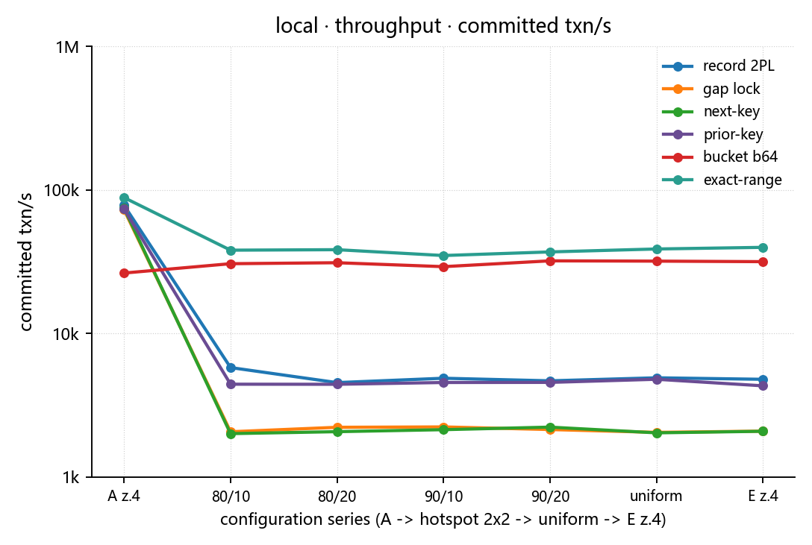
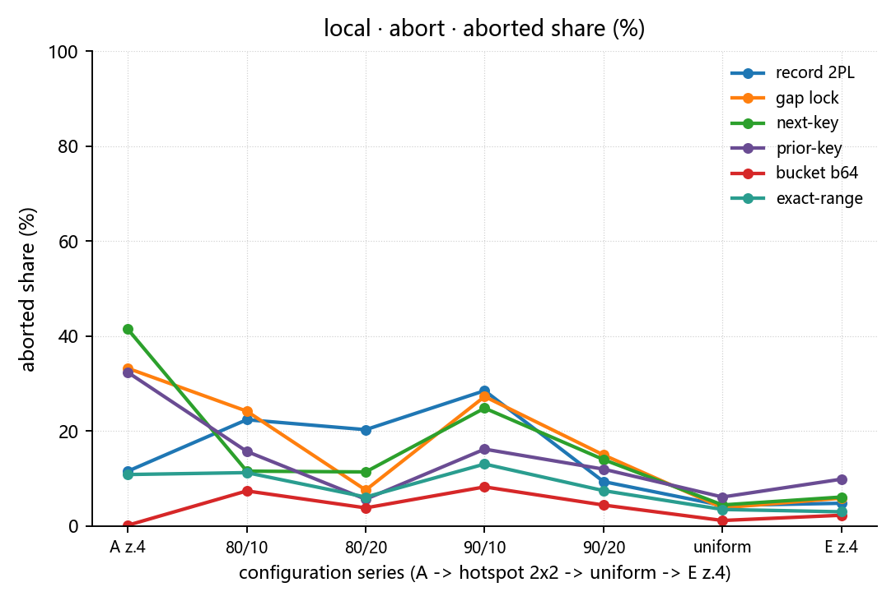
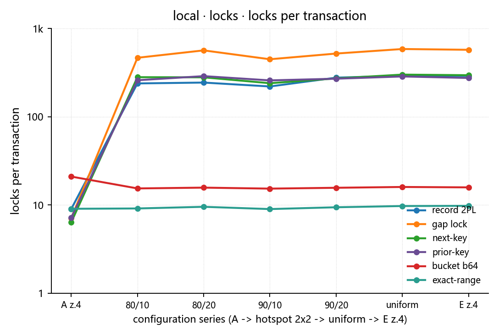
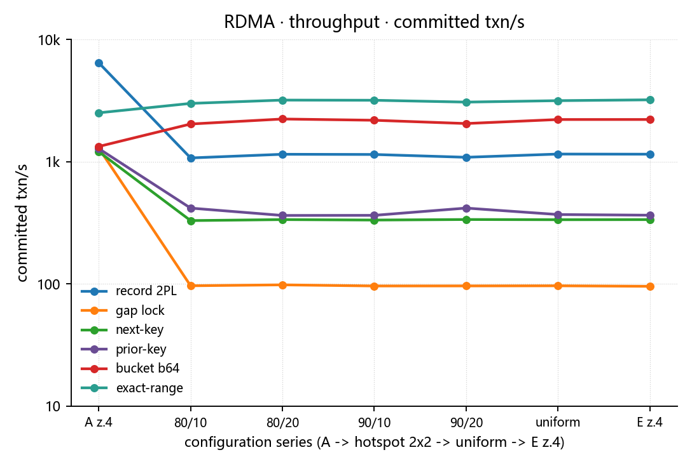
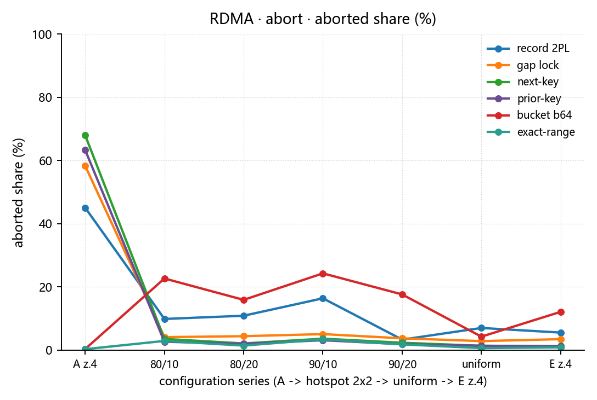
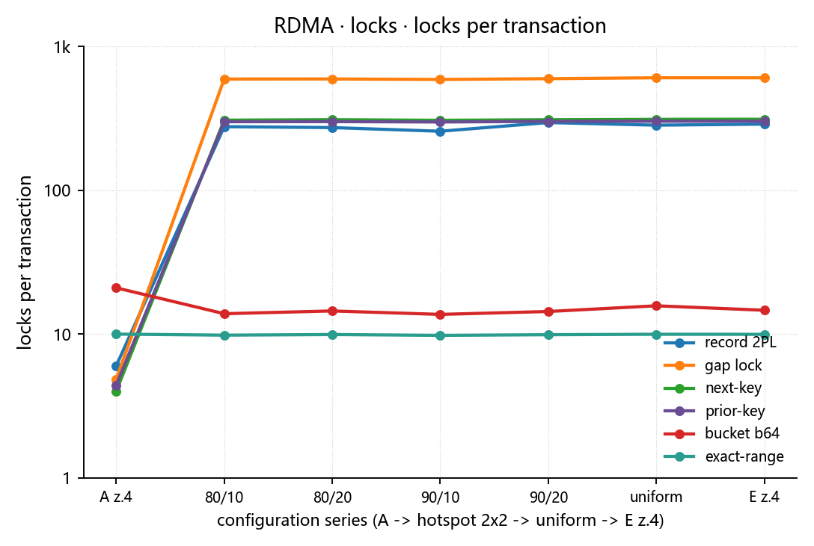
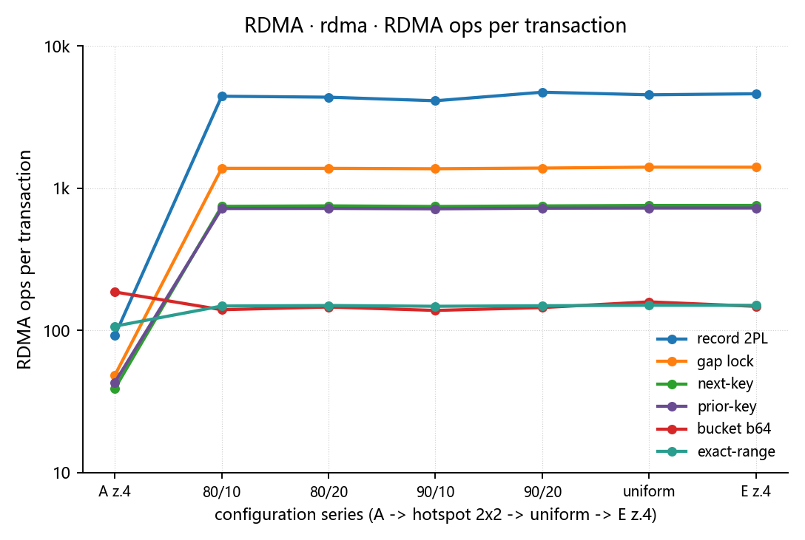
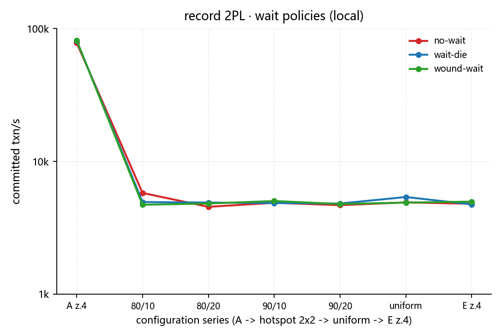
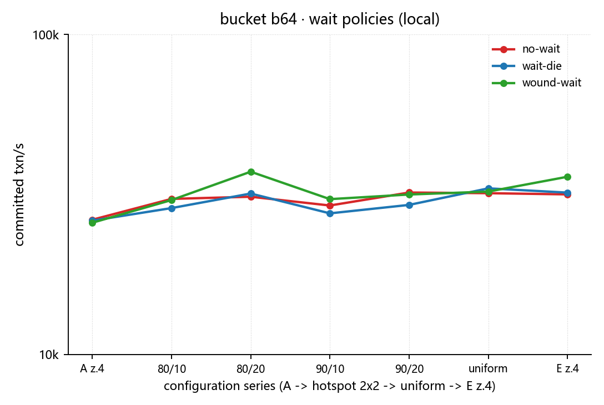
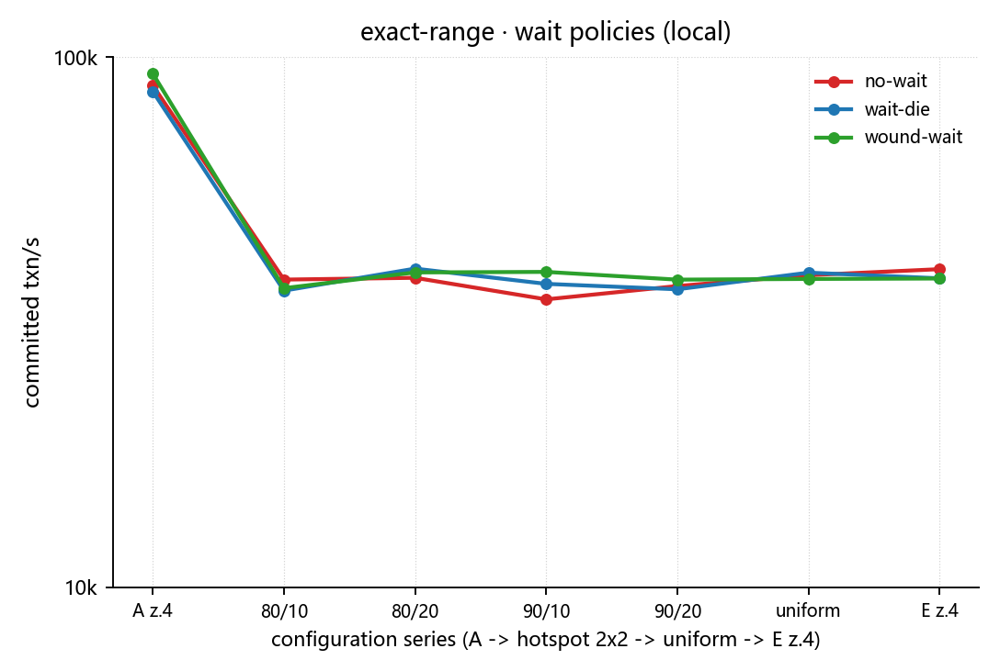
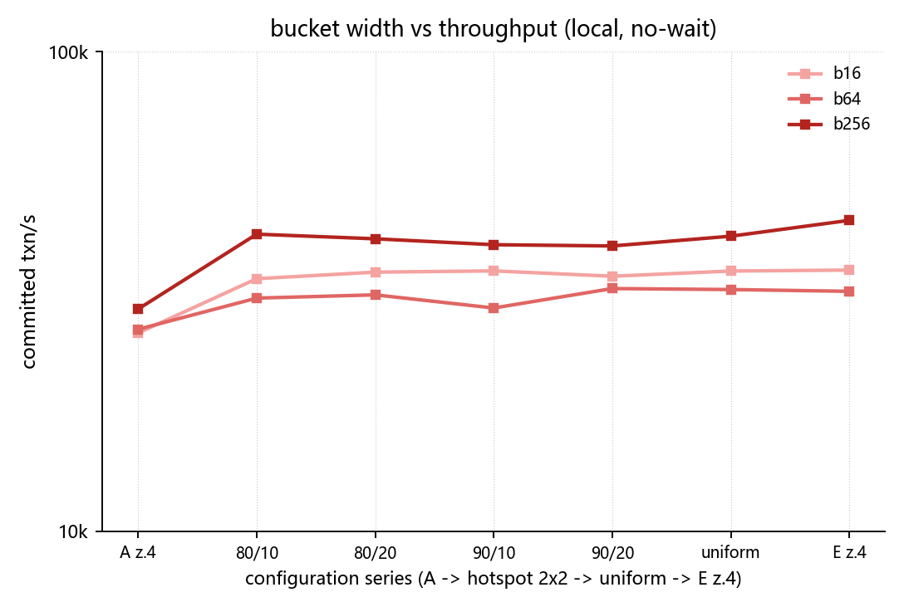
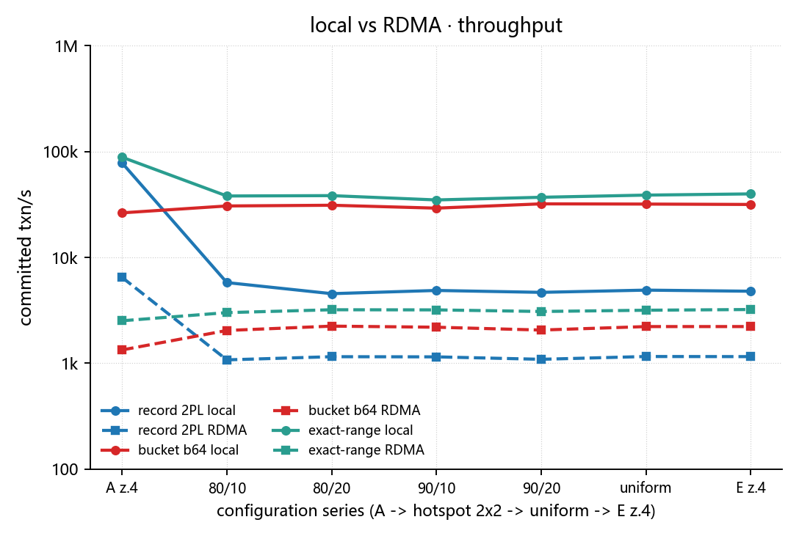
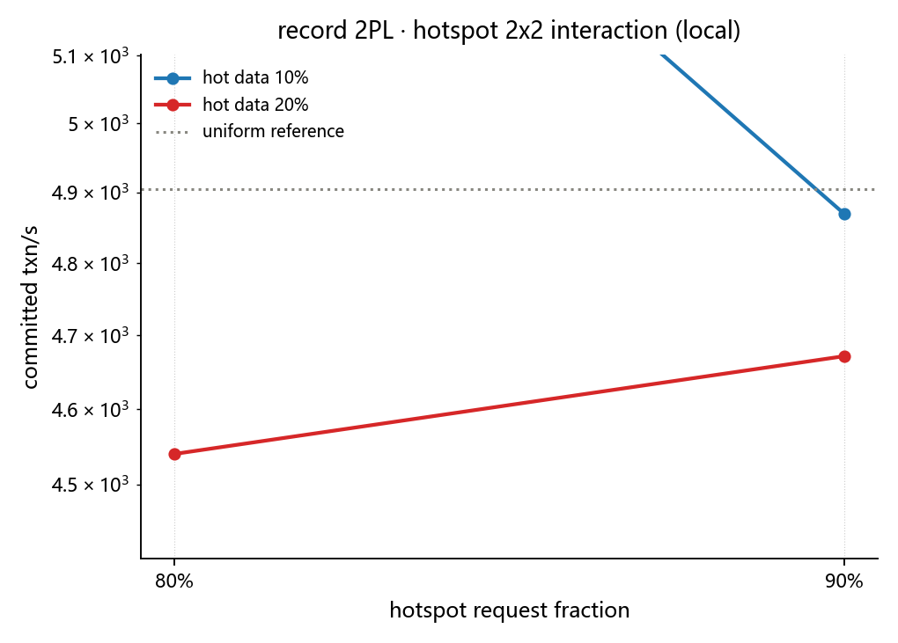
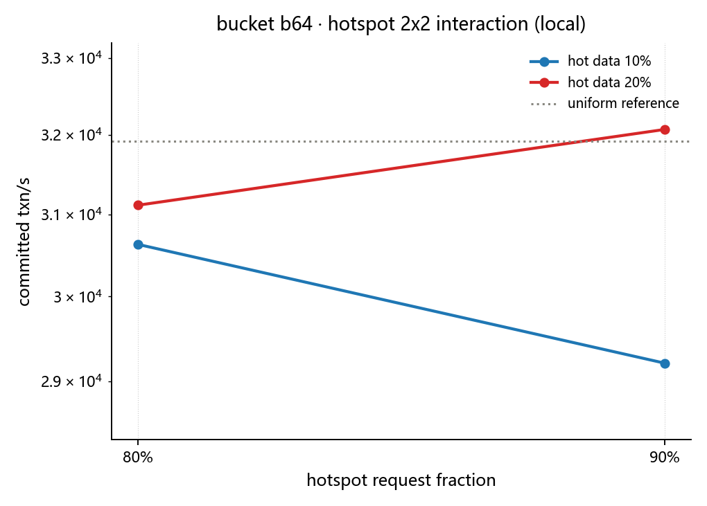
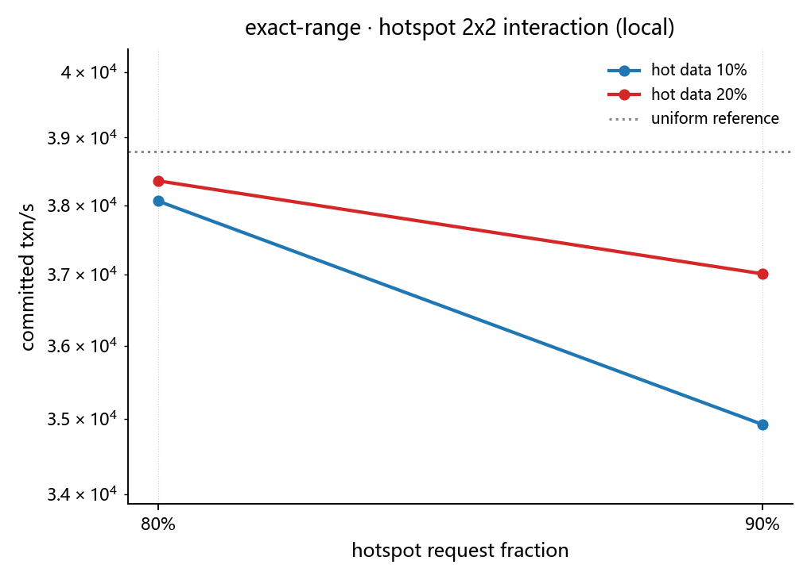
脚本 plot_lines_mpl.py；柱状图版见 正式报告-7of7.html。